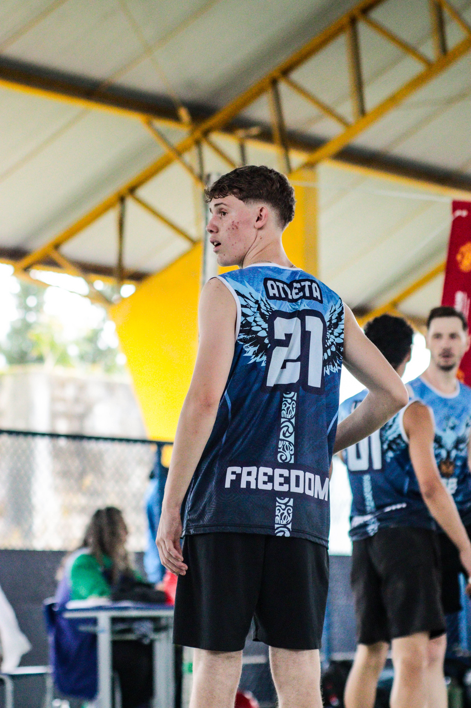

Desenvolvedor Fullstack focado em criar soluções eficientes e modernas. Atualmente estudando Desenvolvimento de Sistemas e atuando na Metalúrgica Schwarz.
Há quase 2 anos realizando o curso de Desenvolvimento de Sistemas, aprimorando conhecimentos em front-end, back-end e banco de dados.
Atualmente trabalhando na Metalúrgica Schwarz, aplicando disciplina, trabalho em equipe e resolução de problemas na rotina diária, atuando como desenvolvedor.
Adoro jogar Vôlei 🏐. O esporte me ajuda a manter o foco, o raciocínio rápido e o espírito de equipe dentro e fora do código.
HTML5, CSS3, JavaScript, Interfaces Responsivas e Modernas.
Lógica de Programação, Estruturas de Dados e Bancos de Dados Relacionais, além de diversas linguagens como C#, Java, Python e etc.
Automação e gerenciamento de Login de novos Alunos, Saída e entrada de Material escolar.
C# / .NET SQL ServerInterface responsiva em JavaScript para monitoramento em tempo real de métricas de chamados da Engenharia dentro da Schwarz.
HTML/CSS JavaScriptDesenvolvimento de serviços backend para integração de dados corporativos.
Python REST APISistema orientado a objetos para controle de dados e geração de relatórios.
Java MySQL